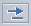

|
 |
Нажатие на этот значок передает пластину из Auto Plate Loader или таблицу вставки, если вы запускаете Suprasetter в качестве полуавтоматического устройства, в барабан визуализации. |
Нажмите эту функцию, чтобы отобразить основной вид. Основной вид отображает графику текущей конфигурации устройства и показывает материальные данные пластины, которую вы собираетесь загрузить или уже загрузили.
Нажмите эту функцию, чтобы отобразить Мастер настройки материала (1).
Нажмите эту функцию, чтобы отобразить сигнальный сигнал, Прочие и таймер Закладки.
Нажмите эту функцию, чтобы отобразить Обзор, Программа и Статистика Закладки.
Нажмите эту функцию, чтобы отобразить Список заданий Закладка.
Нажмите эту функцию, чтобы отобразить Оперативный режим, Основные настройки и Электронная почта Закладки.
Нажмите эту функцию, чтобы отобразить Редактор параметра (1) Закладка.
Нажмите эту функцию, чтобы отобразить Обновление программного обеспечения, Версия программного обеспечения и Резервное копирование Закладки.
Нажмите эту функцию, чтобы отобразить 100 этикетка Закладка.
Нажмите эту функцию, чтобы отобразить конфигурация, Мастер материала (1) Выбор материала и удары Закладки.
Нажмите эту функцию, чтобы отобразить Операционные счетчики, Log File, Измеренные данные и Воображающая система Закладки.
Нажмите эту функцию, чтобы отобразить Мониторинг Закладка.
Нажмите эту функцию, чтобы отобразить Удаленное обслуживание Закладка.
Нажмите эту функцию, чтобы отобразить Удаленное обслуживание Закладка.
Нажмите эту функцию, чтобы отобразить конфигурация Закладка.
Нажмите эту функцию, чтобы отобразить Недвижимость Viewer Закладка.
Нажмите эту функцию, чтобы отобразить Клиент Закладка.
Нажмите эту функцию, чтобы отобразить Недвижимость Настройки и Подтвердить сервисный звонок Закладки.
Copyright © 2016 Heidelberger Druckmaschinen AG